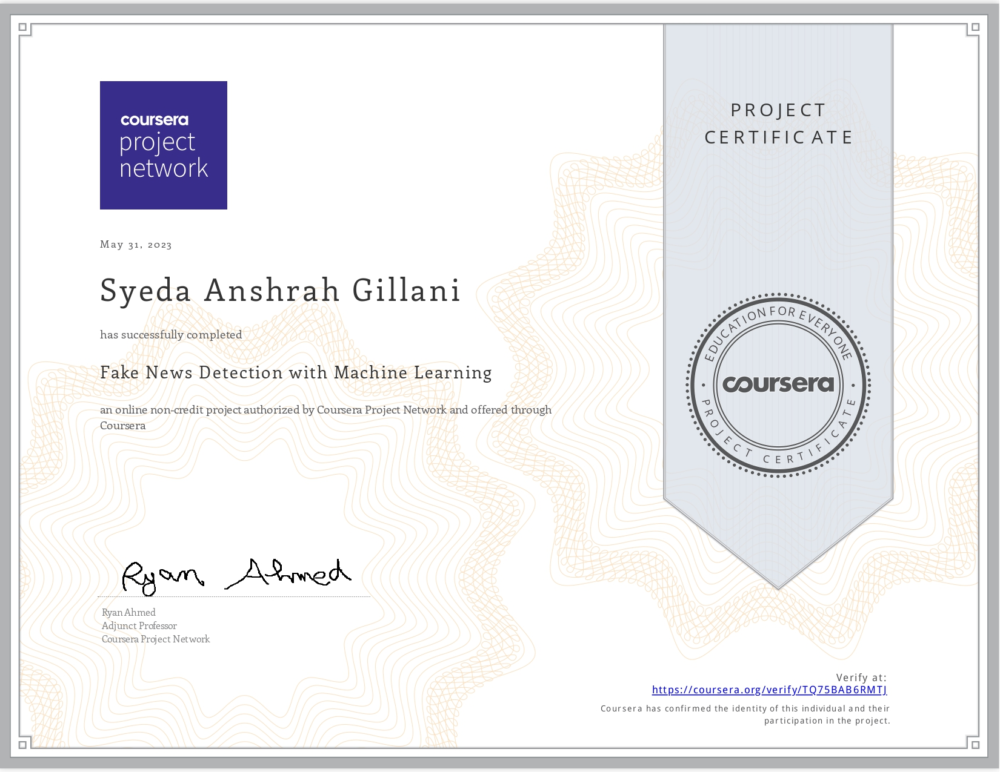
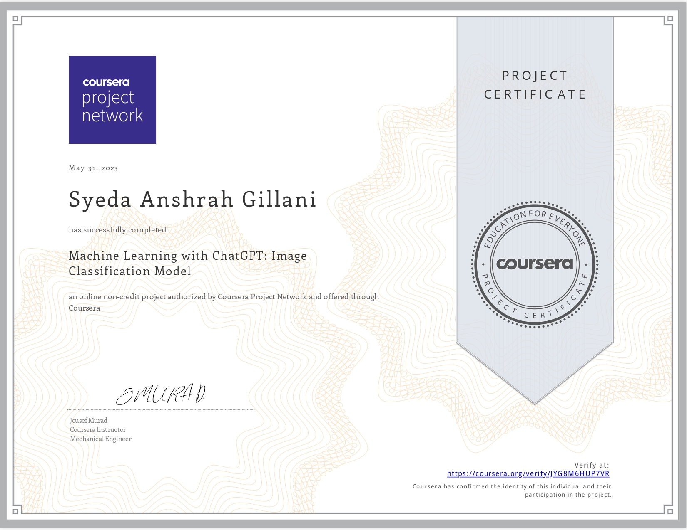
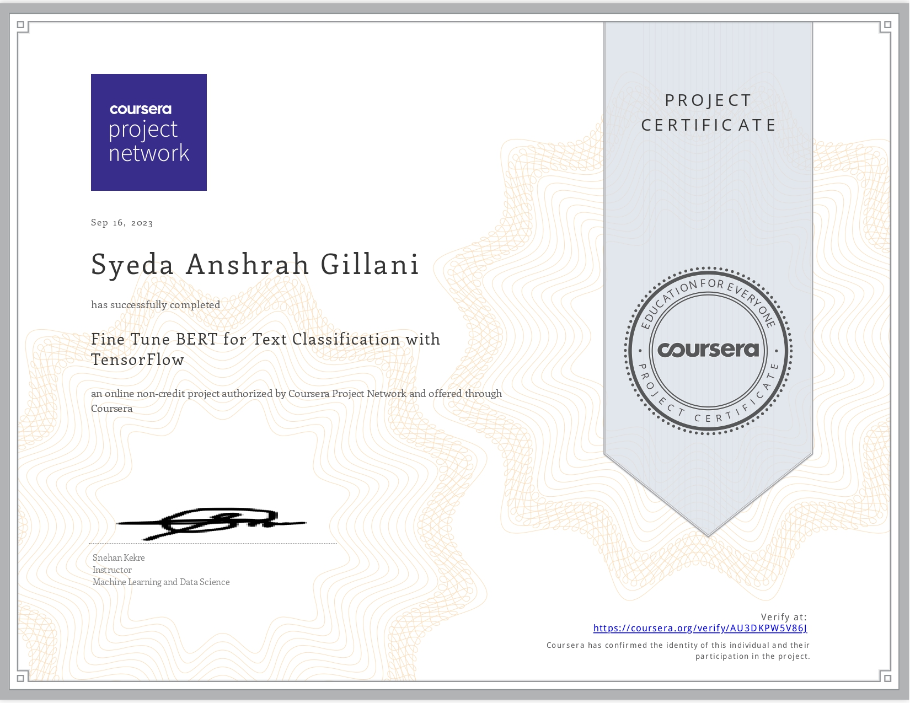
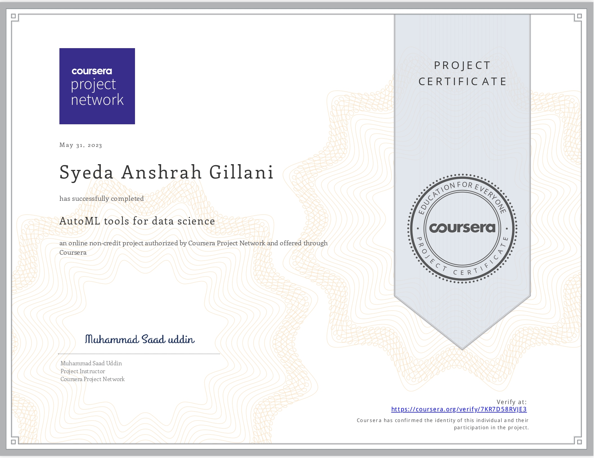

About Me
Syeda Anshrah Gillani
Applied AI Researcher • Elsevier Peer Reviewer • AI Systems Builder
Applied AI Researcher and former Senior AI Project Lead with 3+ years of hands-on experience building production AI systems. Led 8 enterprise AI projects at doAZ (South Korea) spanning multimodal chatbots, computer vision, and RAG-powered systems for major Korean construction firms. Currently reviewing AI research manuscripts for Elsevier (Q1 journal, IF 4.7). Published researcher and top graduate (CGPA 3.8) from Hamdard University, Karachi.
Skills & Tools
A snapshot of the technologies and methods I work with.
Experience
3+ years building AI systems across research and industry.
- Led 8 enterprise AI projects from requirements to delivery for major Korean construction and corporate clients.
- Applied RAG, multimodal AI, and computer vision to real-world safety assessment, document automation, and knowledge management systems.
- Managed cross-functional teams across AI, software, and design departments using Scrum/Jira.
- Served as primary liaison between clients (Lotte Construction, DL Construction, PoongSan Holdings, Seoul Fire Dept.) and the engineering team.
Research
Peer-reviewed academic contribution to the AI research community.
AI-Based Wearable Vision Assistance System for the Visually Impaired: Integrating Real-Time Object Recognition and Contextual Understanding Using Large Vision-Language Models
Advancing Depression Detection on Social Media Platforms Through Fine-Tuned Large Language Models
Production AI Projects
8 enterprise AI systems built and delivered at doAZ for Korean clients.
Multimodal safety assessment chatbot for architectural construction sites — enables site inspections without a dedicated safety officer using visual AI.
Intelligent chatbot specializing in Architectural Safety Standard Specifications — retrieves and interprets complex regulatory documents with high accuracy.
Computer vision system that automatically detects missing insulation elements from architectural blueprints, reducing manual inspection time significantly.
Automated document approval service for architectural submissions — streamlines the approval pipeline, cutting processing time and human error.
Automated CV model for detecting fire safety devices and equipment from architectural blueprints — deployed for the Seoul Fire Department compliance workflow.
International construction contract review chatbot for Lotte Construction — analyzes complex contractual documents and surfaces key risk points and obligations.
Multimodal chatbot supporting both text and image inputs for internal construction method guidelines — enabling engineers to query complex visual documentation naturally.
Internal e-HRD ERP system chatbot for PoongSan Holdings — provides employees with instant answers on HR policies, training, and internal processes.
Licenses & Certifications
116+ certifications across AI, ML, Deep Learning, and Project Management.
- All
- Deep Learning
- Machine Learning
- Project Management
{kind=link}
{kind=link}
{kind=link}
{kind=link}
{kind=link}
{kind=link}
{kind=link}
{kind=link}
{kind=link}
{kind=link}
{kind=link}
Workbench
ML/DL projects and research explorations.
Trained on historical mining data to recognize patterns indicative of high or low-quality outcomes, enabling optimized mining operations.

Algorithmic system that learns language patterns to separate fact from misinformation — combating fake news in the digital space.

Combined machine learning and ChatGPT to build a system trained on diverse images to recognize and classify objects accurately.
Fine-tuned BERT to analyze sentiment from text — classifying emotional tone as positive, negative, or neutral with high precision.
Integrated AI capabilities into Power BI to create an intelligent analytics hub — simplifying complex data processes for smarter business insights.
Fine-tuned Convolutional Neural Networks on a dog breed dataset — achieving accurate multi-class visual recognition using transfer learning.
Built a self-supervised AutoEncoder in PyTorch that learns to compress and reconstruct data — exploring unsupervised representation learning.
Deep learning model for real-world traffic sign recognition — contributing to road safety through accurate multi-class classification in Python/Keras.
Built a dynamic conversational chatbot using the OpenAI API — demonstrating state-of-the-art language understanding and generation in Python.
PyTorch-based CV model trained on diverse chest X-ray datasets to detect COVID-19 — at the intersection of healthcare and deep learning.

Customized and fine-tuned BERT with TensorFlow for a specific text classification task — leveraging transformer architecture for NLP.

Explored AutoML tools covering the full data science pipeline — from preprocessing to deployment — making ML accessible and efficient.
What They Say
From colleagues and direct managers at doAZ.
GitHub Repositories
Explore my public work and experiments.
SyedaAnshrahGillani
Hobbies & Interests
Love basketball for its energetic rhythm and as a source of physical fitness and competitive enjoyment.
Deep interest in books about latest technologies and innovation — fueling continuous learning in a fast-evolving field.
Art is my creative escape — expressing emotions and bringing imagination to life through drawing and painting.
Former swimming pool instructor and lifeguard — swimming remains one of my favourite and most cherished hobbies.
Contact Me
Open to research collaborations, AI roles, and interesting conversations.
Social Profiles
Connect and follow my work